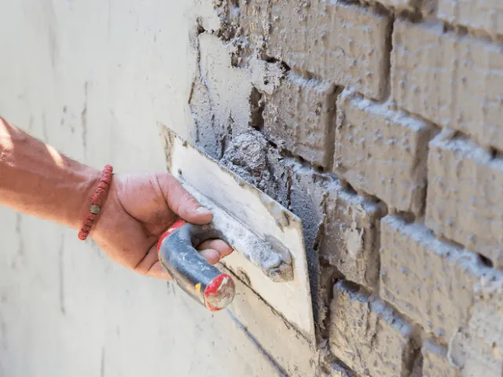
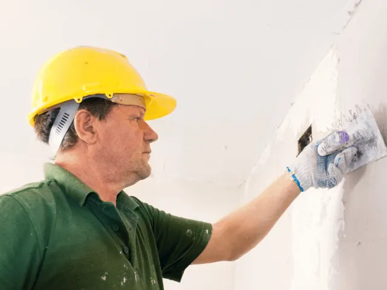

Partnerbijdrage
Voor een goede stukadoor kan de muur niet glad genoeg zijn
Gepubliceerd op 15 mei 2023, bijgewerkt op 26 februari 2024

Stukadoors zijn onmisbaar voor elke muur en plafond. Het zijn echte ambachtslieden die zorgen voor het afwerken van de wanden en plafonds van huizen en gebouwen, zowel aan de binnen- als buitenkant. Hun werk is niet alleen belangrijk voor het esthetische aspect van de woning, maar ook voor de functionaliteit ervan. Een goede afwerking zorgt er namelijk voor dat de wanden en plafonds beter bestand zijn tegen vocht, vuil en schimmel.
Een goede stukadoor is daarom onmisbaar bij het renoveren of verbouwen van een woning. Maar wat doet een stukadoor precies en waar moet je op letten bij het inhuren van een goede stukadoor?
Wat doet een stukadoor?
Een stukadoor is verantwoordelijk voor het aanbrengen van een afwerklaag op de wanden en plafonds van een woning. Hierbij wordt er gebruik gemaakt van verschillende materialen zoals gips, kalk of cement. Het aanbrengen van de stuclaag doen ze met behulp van verschillende technieken zoals pleisteren, spackspuiten of sierpleisteren.
Naast het afwerken van wanden en plafonds, kan een stukadoor je ook helpen met herstelwerkzaamheden. Denk hierbij aan scheuren, gaten of afbrokkelende stukken.
Waar moet je op letten bij het inhuren van een stukadoor?
Het inhuren van een stukadoor is geen alledaagse bezigheid en je wil dat het goed gebeurt voor een leuke prijs. Dus waar moet je dan op letten bij het inhuren van een goede stukadoor?
- Ervaring en vakmanschap: Een goede stukadoor beschikt over de nodige ervaring en vakmanschap. Vraag daarom altijd naar referenties en bekijk het portfolio van de stukadoor om een idee te krijgen van zijn of haar werk.
- Offerte: Vraag altijd om een offerte voordat je een stukadoor inhuurt. Zo kom je niet voor verrassingen te staan en weet je waar je aan toe bent. Plus, je kan bij meerdere bedrijven offertes aanvragen om te vergelijken.
- Garantie: Een goede stukadoor biedt garantie op zijn of haar werk. Vraag daarom altijd naar de garantievoorwaarden voordat je de stukadoor inhuurt.
- Communicatie: Een goede communicatie tussen jou en de stukadoor is essentieel. Bespreek daarom altijd je wensen en verwachtingen en maak duidelijke afspraken over de uitvoering van het werk. Communication is the key!

Wil je zelf aan de slag? Lees dan even onze tips door!
Allereerst is het belangrijk om te weten dat er verschillende soorten stucwerk bestaan, zoals pleisterwerk, raapwerk en spachtelputz. Voor elk type stucwerk gelden weer andere technieken en materialen. Het is dus zaak om goed te bedenken wat voor soort stucwerk je wilt en hier vervolgens de juiste materialen en gereedschappen voor aan te schaffen.
Een goede voorbereiding is het halve werk, dat geldt ook voor stuken. Zorg er daarom voor dat de ondergrond goed schoon en droog is voordat je begint. Eventuele beschadigingen of scheuren moeten eerst gerepareerd worden. Ook is het verstandig om de muren en plafonds eerst voor te behandelen met een primer. Dit zorgt voor een betere hechting van de stuclaag.
Vervolgens kun je aan de slag met het aanbrengen van de stuclaag. Dit kan op verschillende manieren, afhankelijk van het type stucwerk dat je hebt gekozen. Over het algemeen geldt wel dat je het beste in dunne lagen kunt werken. Hierdoor voorkom je dat de stuclaag gaat scheuren of loslaten.
Een belangrijk onderdeel van stuken is het gladstrijken van de stuclaag. Dit kun je doen met een speciale stucspaan of een spaan met een rubberen inzetstuk. Werk hierbij altijd van boven naar beneden en van links naar rechts. Zorg ervoor dat de laag overal even dik is en dat er geen oneffenheden of bobbels ontstaan.
Als je de stuclaag eenmaal hebt aangebracht en gladgestreken, is het tijd voor de afwerking. Dit kan op verschillende manieren, bijvoorbeeld door de stuclaag te schilderen of te behangen. Ook kun je kiezen voor een speciale afwerking zoals spachtelputz of granol.

Toch liever een professional inhuren? Dan kan in Nijmegen bij deze toppers:
Stukadoors en afbouwbedrijf Peters
Stukadoors en Afbouwbedrijf Peters is niet zomaar een stukadoorsbedrijf gevestigd in Nijmegen. Met meer dan 30 jaar aan ervaring in nieuwbouw en renovatie, is dit de plek waar u de vakman vindt die u zoekt.
Bosch stucadoors
Bosch Stucadoors is een traditioneel stucadoorsbedrijf in Nijmegen dat zich richt op nieuwbouw en renovatie voor particuliere opdrachtgevers, aannemers en schilders in de omgeving. Ze bieden verschillende stucwerkzaamheden, zoals glad stucwerk, schuurwerk en sierpleisters en kunnen ook zorgen voor het airless schilderwerk van wanden en plafonds.
TLD
Hier ga je heen voor een hoge kwaliteit, een scherpe prijs en garantie! En ze hebben al meer dan 35 jaar ervaring. En zoals ze zelf zeggen: “Stucwerk is ons vakmanschap met passie, creativiteit en een ongekend aantal stuc technieken.”
Lionstuc
LionsTuc in Nijmegen staat synoniem voor kwaliteit en vakmanschap in stucwerk. Met hun ervaren team van stukadoors transformeren ze elke ruimte tot een prachtig afgewerkt geheel. Of het nu gaat om een klein project of een grote renovatie, LionsTuc levert altijd werk van topkwaliteit. Ze luisteren naar de wensen van de klant, adviseren deskundig en werken nauwkeurig om een resultaat te leveren dat aan alle verwachtingen voldoet. Kies voor LionsTuc in Nijmegen voor een vlekkeloze en duurzame afwerking van uw muren en plafonds.
Stucwerk Nijmegen
Stucwerk Nijmegen is een gerenommeerde naam in de stukadoorsbranche, bekend om hun uitmuntende vakmanschap en aandacht voor detail. Of het nu gaat om traditioneel pleisterwerk, decoratief stucwerk, of moderne afwerkingstechnieken, hun team van ervaren stukadoors levert altijd werk van de hoogste kwaliteit. Ze zorgen voor een naadloze afwerking, transformeren uw ruimtes en verhogen de waarde van uw woning. Met Stucwerk Nijmegen kunt u rekenen op een professioneel en betrouwbaar team dat streeft naar uw volledige tevredenheid. Zet de stap naar perfecte muren met Stucwerk Nijmegen.